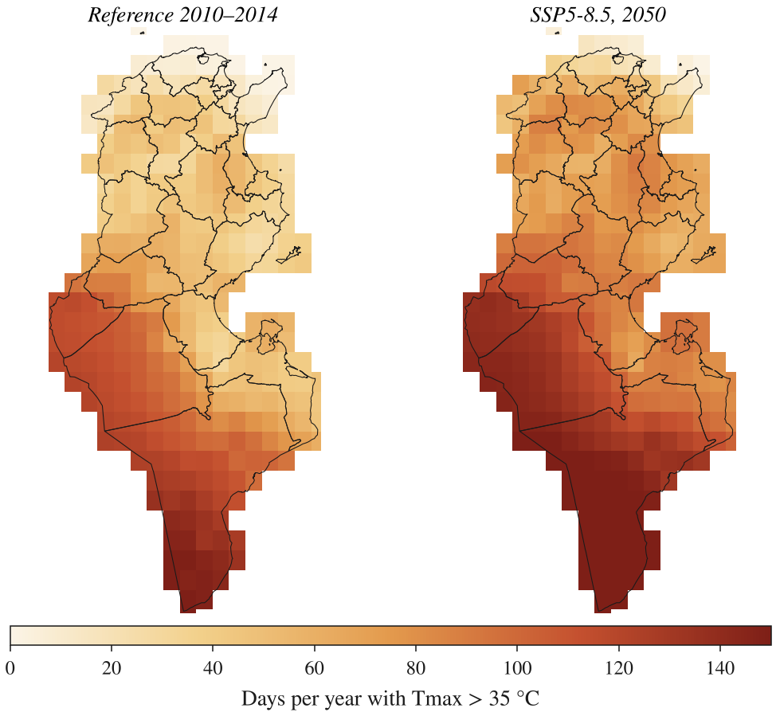
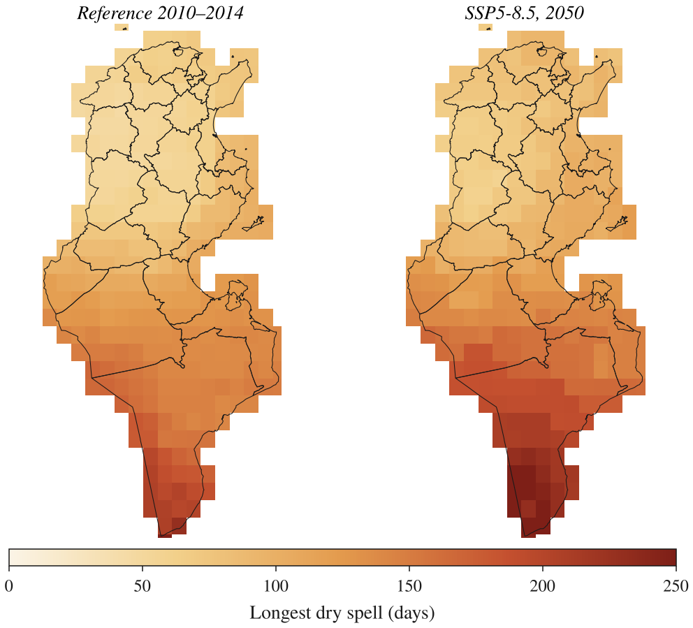
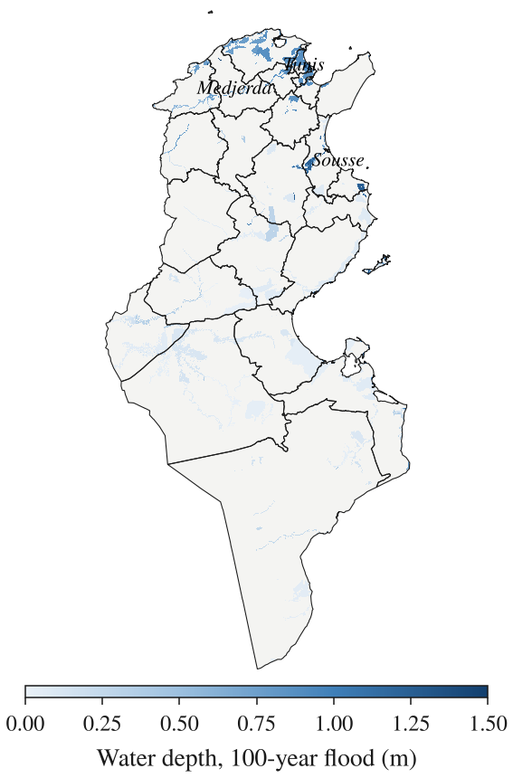
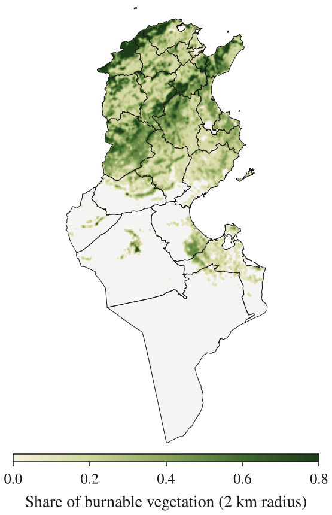

1. Summary
Loading results…
| Scenario | Book in high-hazard zone (%) | Extra expected loss (M TND) | bp of exposure | Change vs current climate (M TND) |
|---|
2. Scenarios
3. Geography
| Governorate | bp | Model range | High-hazard share (%) |
|---|
4. Sectors
5. Physical drivers
Averages at the 2,000 loan locations, median of five CMIP6 models (NASA NEX-GDDP-CMIP6, 0.25°). Rainfall change is measured against each model's own 2010–2014 run, which removes most of the model's bias. With three years per horizon, the 2030 rainfall figures are dominated by year-to-year variability.




6. Robustness
The PD elasticity β dominates: halving or doubling it moves the result by roughly −50 % to +100 %, against −10 % to +18 % across climate models. Raising the flood weight slightly lowers the loss, because flood scores are low for most loans and the composite score is a weighted average.
| Indicator | ρ |
|---|
physrisk's drought indicator (SPEI-12) is relative to local climate and flags the wetter north; the ClimaRisk dry-spell indicator is absolute and flags the arid south. Both show drought worsening at every location.
7. Largest exposures
| Loan | Sector | Governorate | Exposure (M TND) | Hazard score | Extra EL (k TND) |
|---|
8. Method and limits
Method
Four hazards are measured at each loan's location: days above 35 °C and drought (consecutive dry days and rainfall change) from five CMIP6 models; 100-year flood depth from WRI Aqueduct; and burnable vegetation from ESA WorldCover. Each indicator is scaled to a 0–1 score using fixed physical bounds, then weighted by the sensitivity of the loan's sector.
The composite score adjusts the probability of default, PD′ = PD × (1 + β × score), and flood depth raises LGD for land and real-estate collateral. Expected loss is PD′ × LGD′ × EAD. "Extra expected loss" is measured against a climate-neutral PD; the change against today's climate is reported separately.
Limits
- Synthetic portfolio; sector shares, PDs and LGDs are documented assumptions.
- Climate grid of 0.25° (about 25 km); flood data at about 1 km.
- Five models and three years per horizon.
- Aqueduct uses CMIP5 projections and an observation-driven baseline, so flood change over time is not like-for-like.
- β, γ and the vulnerability weights are illustrative, not estimated on defaults.
- Physical risk only. The NGFS Phase V GDP-damage function (Kotz et al., 2024, retracted) is not used.